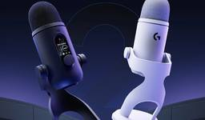

テクノエッジ TechnoEdge
https://www.techno-edge.net/
テックメディア TechnoEdge (テクノエッジ)公式サイトです。サイエンスから最新ガジェット、サービスやコンテンツまで、最前線のニュースとレビュー、コラムをお届けします。
フィード
指輪型AIデバイス『Vocci』国内発売 会議や口述をMCP共有、ChatGPTやClaudeのコンテキスト化 1
1
テクノエッジ TechnoEdge
指輪型AIレコーダーのVocci が国内向けクラファンを実施します。
1日前

生成AIグラビアをグラビアカメラマンが作るとどうなる？第75回：Qwen-Image 2.1は商用利用に制限あり、Ming ImageはUI/UX特化だがリアル人物OKで自由度高くて期待大（西川和久） 29
テクノエッジ TechnoEdge
9月に登場した生成AI画像系2つ。Qwen-Image 2.1は高性能だが商用利用に制限あり。Ming ImageはUI/UX特化だがリアル人物OK。しかも無検閲なのだ。
2日前
OpenAIのエージェントが豪州政府サイトに不正侵入。首相が抗議「法的措置とる」と述べる
テクノエッジ TechnoEdge
オーストラリアのアンソニー・アルバニージー首相は、国連総会出席のために訪れたニューヨークで記者会見を開き、OpenAIのAIエージェントがオーストラリア政府の医療統計ポータルに不正アクセスしていたことを明らかにしました。
2日前
Meta「たまごっち」風AIデバイス「Muse Charm」発表。12月出荷予定、詳細は後日発表 3
テクノエッジ TechnoEdge
MetaはAIアシスタント「Muse」を搭載した小型ハンドヘルドデバイス「Muse Charm」を発表しました。マーク・ザッカーバーグCEO自らが壇上でデモを披露し、スマートグラスを装着しない人がMuseと会話するための手段になるとしています。
2日前
Metaが3D映画やスポーツ配信を大幅拡充、Questにも一部提供。SWやMCU作品を新たな没入フォーマットで提供、VRグラスはIMAX Enhanced認証取得
テクノエッジ TechnoEdge
「Meta Connect 2026」イベントより。Metaはメガネ型のVRデバイス「Meta VR Glasses」とあわせて、3D映画を軸にした映像コンテンツの拡充策を発表しました。
2日前

定番マイクYETIに17年ぶり後継「YETI 2」 近接センサで指向性まで自動調整、Logi Gブランドでゲーミングやクリエーター向け
テクノエッジ TechnoEdge
ロジクールは、ロジクールGブランドのUSBマイク「YETI 2 アダプティブマルチパターン USB マイク」を10月15日に発売します。カラーはブラックとホワイトの2色で、ロジクールオンラインストア価格は2万8930円（税込）です。
2日前
カメラなしのレイバンMeta Audioグラス・LISAコラボ・新型Gen 3などAIグラス多数発表、4万2680円から 1
テクノエッジ TechnoEdge
MetaとEssilorLuxotticaは9月24日（日本時間）、年次イベント「Connect 2026」でAIグラスの新製品「Ray-Ban Meta Audio」と「Ray-Ban Meta (Gen 3)」を発表しました。Gen 3は同日から日本でも販売を開始し、Audioの日本展開は2027年を予定しています。
2日前

最高水準の動画生成AI「MiniMax H3」高速化を40日で極めた。本命「H3 Max」のウェイト公開はもう不要なのか？（CloseBox） 4
テクノエッジ TechnoEdge
現時点で最高水準と言われ、商用サービスSeedance 2.5に匹敵するとも言われている動画生成AI「MiniMax H3」。その高速化への道のりを記事にしました。
2日前
Meta VRグラス発表。メガネ部100gで5K OLED画面とアイトラ対応、Questアプリ互換 IMAX認証で3D映画やスポーツコンテンツも大量投入 1
テクノエッジ TechnoEdge
「Meta Connect 2026」イベントで、Metaがメガネ型のVRデバイス「Meta VR Glasses」を発表しました。発売は2027年春、価格は1299.99ドル。日本でも販売します。
3日前
YouTube「カスタムフィード」を複数作成してタブ化、ホーム画面に保存する新機能を米国で導入へ 2
テクノエッジ TechnoEdge
YouTubeは、Geminiの技術を用いた新しいホーム画面を今秋より米国で導入します。カスタムフィードと呼ばれるこの機能は水曜日の「Made on YouTube」イベントで発表されましたが、今年5月に発表された同名の機能を発展させたものとなります。
3日前
Inno3D子会社、アロマテラピー機能搭載のRTX 5070グラフィックカードを限定発売 2
テクノエッジ TechnoEdge
香港のPCグラフィックボードベンダーであるAX Gamingは「アロマテラピー」機能を内蔵したグラフィックカード「GeForce RTX 5070 12G Autumn Limited Edition」を発表しました。同社は今年、季節ごとに特色グラフィックカードを限定発売しており、これはその第3弾となります。
3日前

Claude Opus 5.5発表、Astra超え・Fable 5.1級で半額以下。口調も結論から分かりやすく改善、無料リセット配布 3
テクノエッジ TechnoEdge
Anthropicは米国時間9月22日、AIモデル「Claude Opus 5.5」の提供を開始しました。新たな「Claude 5.5」ファミリーの最初のモデルで、同社の各サービスとAPIのほか、Amazon Web Services、Google Cloud、Microsoft Azureでも利用できます。
3日前
XBOX、開発スタジオ再編で268人追加削減。『Halo』新作はActivisionが開発、Ninja Theoryは閉鎖濃厚
テクノエッジ TechnoEdge
マイクロソフトのXBOX部門エグゼクティブバイスプレジデント兼チーフコンテンツオフィサーのマット・ブーティ氏が、新たに268人の人員削減と、複数のファーストパーティスタジオの再編を発表しました。
4日前

約4.5万円の高級コントローラはどこが違う？ SteelSeries Aeon Pro発売、PC / Xbox / モバイル共用でカスタマイズ対応
テクノエッジ TechnoEdge
SteelSeriesは、Xbox・PC対応の新型ワイヤレスゲーミングコントローラー「SteelSeries Aeon Pro」を発表しました。
4日前

Googlebook 計5機種が発売、Acer・ASUS・HP・デル・レノボ製 Gemini統合のGooglebook OS搭載
テクノエッジ TechnoEdge
Acer、ASUS、Dell、HP、Lenovoの5社が、GeminiをOSに統合した新たなノートPC「Googlebook」の予約受付を開始しました。米国では10月4日、カナダ、英国、アイルランド、フランス、ドイツ、オーストラリアでは10月5日に店頭販売を開始します。
4日前
米Amazon、MetaのAIエージェント「Muse」による買い物代行をブロック。プライバシーとセキュリティを懸念 2
テクノエッジ TechnoEdge
米Amazonは、Metaが2025年9月8日に公開したパーソナルAIエージェント「Muse」によるAmazon.comへのアクセスを遮断しました。
5日前

ひょっとしてローカル最速？ 「詳細記述スパース」でMiniMax H3前人未到の3ステップ超えできちゃったかも（CloseBox） 3
テクノエッジ TechnoEdge
AI動画がさらに最大で1.5倍速くなりました。MiniMax H3の現在最速である3ステップの上に「スパースアテンション」を重ねることで。
5日前
生成AIグラビアをグラビアカメラマンが作るとどうなる？第74回：MiniMax H3高速化、15枚参照ほか多彩なテクニックを紹介（西川和久） 24
テクノエッジ TechnoEdge
MiniMax H3高速化の基本4つを紹介しよう。
6日前
Sunoに匹敵する音楽生成AI「YuE2」、膨大な論文から“まだ誰も知らない科学的関係”を予測するソニー製AI「Hakken」など生成AI技術5つを解説（生成AIウィークリー） 20
テクノエッジ TechnoEdge
「生成AIウィークリー」（第160回）は、Suno v5／v6に匹敵する音楽生成AI「YuE2」や、過去の論文から未来の発見を予測するAI「Hakken」を取り上げます。
7日前
台風で東京ゲームショウ2026最終日が開催中止 21日(月)分は払い戻し・企画はオンライン配信調整、史上初の5日間開催ならず 1
テクノエッジ TechnoEdge
幕張メッセで開催中の東京ゲームショウ2026を運営するCESAが、5日目にあたる9月21日(月)の開催中止を発表しました。
7日前

ハエの脳を楽器にした。十数万個のニューロンで無限に音楽を奏でる「Music on the Fly」を作った（CloseBox）
テクノエッジ TechnoEdge
次は何を無限にしようか。そう考えていたら、人間の作曲家ではなく、ハエの脳に行き着いてしまいました。
9日前
GPT-6 Astra使い『Minecraft』内で『CoD:BO2』人気マップをネイティブ動作させた動画、AIコーダーが公開
テクノエッジ TechnoEdge
「AIを活用したゲーム開発」を志す開発者Luckey Faraday氏はFPSゲーム『Call of Duty : Black Ops 2』の「Hijacked」マップを人気サンドボックスゲーム『マインクラフト』内でネイティブ動作させることに成功したと述べ、Xに動画とともに投稿しました。
9日前
「Claude Cowork」がClaudeチャットに統合、ドキュメント・スライド作成も可能に
テクノエッジ TechnoEdge
Anthropicは、AIアシスタント「Claude」のエージェント型作業環境「Cowork」をデフォルトのチャットに統合、一本化すると発表しました。これにより、ユーザーはリクエストをチャットに投げるか、エージェント型ワークスペースで処理するかの判断をする必要がなくなります。
10日前
ソニー、平面駆動の新型PS5ヘッドセットPlayStation Pulse / Pulse Edge発表。TGSで披露
テクノエッジ TechnoEdge
ソニー・インタラクティブエンタテインメント（SIE）は9月16日、PS5向けワイヤレスヘッドセットの新モデル「PlayStation PULSE ワイヤレスヘッドセット」と、より上位に位置づけられる「PULSE Edge ワイヤレスヘッドセット」を発表しました。
10日前
「優秀な人のAIの設定・やり取り」をチーム全員で自動共有できる無料ツール「TeamAI」が商用利用可で登場（生成AIクローズアップ）
テクノエッジ TechnoEdge
今回は、AIの設定や活用ノウハウなどをチーム全員で自動共有できるテンセント開発のオープンソースツール「TeamAI」（teamai-cli）を取り上げます。
10日前
3つ折りスマホ「Huawei Mate XT 2 Ultimate Design」実機ハンズオン、サムスンGalaxy Z TriFoldと比較 G型で新時代到来
テクノエッジ TechnoEdge
ファーウェイのMate XT 2は新たにサムスンGalaxy Z TriFoldと同じG型三折りで構造で、開時10.2/閉時6.5インチディスプレイを搭載。高性能なカメラも搭載している。
10日前
InstagramなどにMeta AI機能追加する新サブスク「Meta One」発表。月額299円から、50以上の機能を提供
テクノエッジ TechnoEdge
Metaは、個人やクリエイター、ビジネスユーザーなどを対象とする新サブスクリプションプラン「Meta One」を発表しました。
11日前
東京に無人タクシー Google系WaymoとGO・日本交通が協業、2027年にレベル4完全無人運転で商用化目指す
テクノエッジ TechnoEdge
GO株式会社、Waymo、日本交通株式会社の3社は9月15日、東京における自動運転タクシーの商用化に向けて戦略的パートナーシップに合意したと発表しました。2027年中に、国内初となる自動運転レベル4による完全無人走行の商用タクシー運行を東京で目指すとしています。
11日前
Steam Frame国内発売、19万9980円から。Valveの新生VRヘッドセット
テクノエッジ TechnoEdge
ValveがVRヘッドセット Steam Frame を全世界で発売しました。
12日前
アップル、iOS 27など最新OSを一斉に配信開始。「Siri AI」日本提供は10月以降
テクノエッジ TechnoEdge
アップルが、同社が販売する各デバイス用OSのメジャーアップデートとなる、iOS 27、iPadOS 27、macOS 27、watchOS 27、visionOS 27、tvOS 27をリリースしました。
12日前
ロジの左手デバイスMX Creative Consoleが4割引、Amazonセールで1万9800円 新製品『AIコントローラ』の両手版
テクノエッジ TechnoEdge
ロジクールのクリエイター向けコントローラ「MX Creative Console」(通常33,000円)が、Amazonタイムセールで40%オフの19,800円（税込）になっています。
12日前
Insta360 Luna Pro発売、望遠なしで8万円台のLeicaレンズ ジンバルカメラ ヘッドトラッカーやMic Pro / Air対応はUltra共通
テクノエッジ TechnoEdge
Insta360がライカ共同開発のジンバルカメラ「Insta360 Luna Pro」を発売しました。標準版の価格は83,200円。カラーはコスミックブラックとステラホワイトの2色。
12日前
MiniMax H3生成時間がまたまた半分に。ハードに2000万円かかる配信用ソフトから「3ステップLoRA」を抜き出して自宅の5090で使ったら、待望のAI動画対話システムができた（CloseBox）
テクノエッジ TechnoEdge
今日は40回目の結婚記念日なので、ミュージックビデオを作りました。先日大幅に改定されたSuno v6を使い、自前MV制作システムであるLaVialeで、MiniMax H3による高速動画生成を活用したものです。
12日前
スタークラフト完全新作が2030年発売 オープンワールドシューターで復活
テクノエッジ TechnoEdge
久々の開催となったイベントBlizzConで、Blizzard が『スタークラフト』シリーズの完全新作『StarCraft』を発表しました。
12日前
うわさのアップル純正ゲームコントローラー、Beatsブランドで開発・リリースの可能性
テクノエッジ TechnoEdge
9月初旬にmacOS 26.7 RC1のコード解析によって発見されたアップル純正ゲームコントローラーは、アップル傘下のオーディオブランドBeatsから発売されることになるかもしれません。
13日前
大規模言語モデル研究開発センターが公開した視覚AI「LLM-jp-4-VL 9B」、Opus 4.8に肉薄するマルチモーダルAI「DeepSeek-V4-Flash-Vision-Exp」など生成AI技術5つを解説（生成AIウィークリー）
テクノエッジ TechnoEdge
今回の「生成AIウィークリー」（第159回）は、Opus 4.8に肉薄するマルチモーダルAI「DeepSeek-V4-Flash-Vision-Exp」や、複数データを同時分析して未来を予測するGoogle開発のAI「TimesFM-3」を取り上げます。
13日前
Meta、開発中のヘッドセット「Project Phoenix」とみられる画像が流出。メガネ風の薄型デザイン
テクノエッジ TechnoEdge
Metaが開発中と言われている、「Project Phoenix」と呼ばれる次世代ヘッドセット製品らしき画像が、同社のHorizon OSアプリ内から発見されました。
15日前
ベルキンからノート向け大出力モバイルバッテリー、MacBook Pro 16も急速充電の単ポート140W対応
テクノエッジ TechnoEdge
ベルキンがノートPCの急速充電にも対応する大出力・大容量モバイルバッテリー「UltraCharge Pro」シリーズ2機種を発売しました。
15日前
写真から実物と区別つかないレベルの3D人体モデルを作り、リグ入れてリアルタイム対話させるまで。ChatGPTとClaudeのコラボで開発した（CloseBox）
テクノエッジ TechnoEdge
写真からフォトリアリスティックな人体モデルを生成する話は以前から何度かしておりますが、ひさしぶりに触ってみたところ、ほぼ写真と区別がつかないレベルまで到達したのではないかと実感するに至りました。
15日前
トランプスマホ「T1」が従来比1.5倍にサイレント値上げ。iPhone 17eより高額に
テクノエッジ TechnoEdge
トランプ米大統領が所有するトランプ・オーガニゼーション傘下のMVNO事業者トランプ・モバイルは、同社が販売する金色のスマートフォン「T1」の価格を、499ドル（約7万7000円）から749ドル（約12万3000円）に引き上げました。従来比約1.5倍の大幅値上げとなります。
16日前
Switch 2更新でTVモードVRR対応。MiiのQRコード共有と懐かしの曲、Switch 2間の転送など新機能・改良多数
テクノエッジ TechnoEdge
任天堂がNintendo Switch 2の本体更新バージョン23.0.0を配信しました。
16日前
8K360度ドローンAntigravity A1が5万円引きの夏セールまもなく終了 空に「居る」プレゼンス感覚を共有できる直感操作が魅力
テクノエッジ TechnoEdge
360度カメラドローン Antigravity A1が最大25%オフで購入できる夏セールは、まもなく9月11日(金)で終了します。
16日前
小島秀夫新作『PHYSINT』協業をソニーが中止、XBOXで開発継続へ 『キャンセルするという通達が突然届きました』
テクノエッジ TechnoEdge
『メタルギア』シリーズや『デス・ストランディング』で知られるゲームデザイナー小島監督の新作『PHYSINT』が、共同発表したソニーからパートナーシップを断たれ、新たにマイクロソフトXBOXとの協業で開発を継続することが分かりました。
16日前
5分で分かるApple発表まとめ：初折りたたみ iPhone Duo・可変絞り18 Pro・新Watch S12 / Ultra・AirPods 5
テクノエッジ TechnoEdge
iPhone初の折りたたみモデル『iPhone Duo』など、9月10日のイベントでAppleが発表した新製品をまとめます。
16日前
しばらく先行レビューしていたAppleのフォルダブルDuoについて語らせてくれ（CloseBox）
テクノエッジ TechnoEdge
Appleの新しいCEOが発表する新製品を出したそうですね。Duoとかいうフォルダブル。二つ折りの携帯端末。筆者も持ってます。
16日前
iPhone 16 / 17 / Airまた値上げ、2か月前より約3万円～アップ 新型の陰でサイレント価格改定
テクノエッジ TechnoEdge
初の折りたたみモデル iPhone Duo、可変絞りを搭載した iPhone 18 Pro 発表する一方で、Appleは既存のiPhone 16 / 17 / 17e / Air をサイレント値上げしています。
17日前
折りたたみ iPhone Duoは36万4800円から。カメラ穴なし「白銀比」大画面で独自UI採用とペン対応、最速A20 Proチップ採用
テクノエッジ TechnoEdge
Appleが初の折りたたみiPhone、『iPhone Duo』を発表しました。
17日前
Apple Watch Series 12／Ultra 4 発表。S11チップ、「ウェアラブル史上最高精度心拍数センサー」搭載
テクノエッジ TechnoEdge
アップルはスマートウォッチ新製品 Apple Watch Series 12およびApple Watch Ultra 4を発表しました。
17日前
アップル新イヤホン AirPods 5 発表。「業界最高クラス」の解放型ANC搭載、税込2万3800円から
テクノエッジ TechnoEdge
アップルは、9月10日午前2時から行われた新型iPhone発表イベントで「業界最高のアクティブノイズキャンセリング（ANC）」を搭載するとうたう新型完全ワイヤレスイヤホン AirPods 5 を発表しました。
17日前
iPhone 18 Pro／18 Pro Max発表、カメラに可変絞り搭載、A20 ProチップでAIもゲームも軽快
テクノエッジ TechnoEdge
アップルが、iPhone 18 ProとiPhone 18 Pro Maxを発表しました。9月18日発売で、価格はiPhone 18 Proが1199ドルから、iPhone 18 Pro Maxは1299ドルから。9月12日から予約受け付けを開始します。
17日前